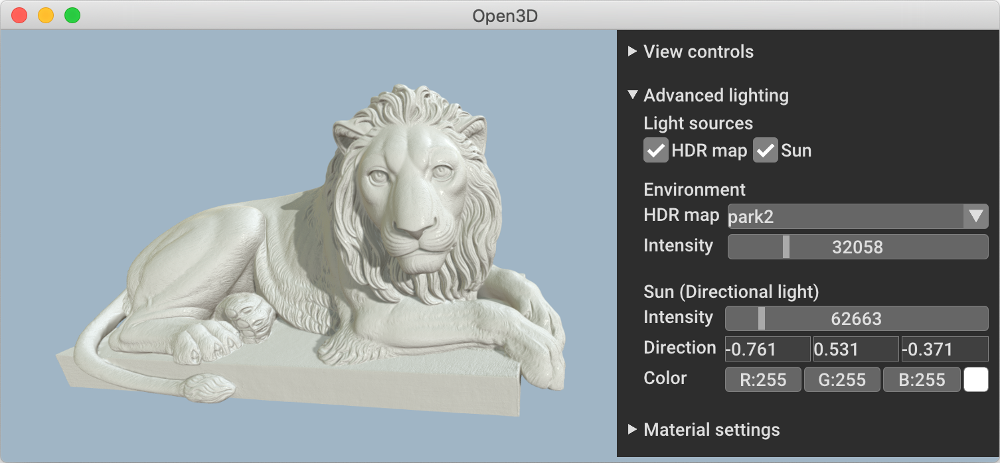
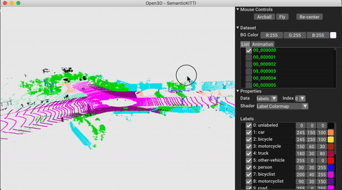

|
Open3D (C++ API)
0.17.0
|
|
Open3D (C++ API)
0.17.0
|
Open3D is an open-source library that supports rapid development of software that deals with 3D data. The Open3D frontend exposes a set of carefully selected data structures and algorithms in both C++ and Python. The backend is highly optimized and is set up for parallelization. We welcome contributions from the open-source community.


Core features of Open3D include:
For more, please visit the Open3D documentation.
Pre-built pip packages support Ubuntu 18.04+, macOS 10.15+ and Windows 10+ (64-bit) with Python 3.6-3.10.
To get the latest features in Open3D, install the development pip package. To compile Open3D from source, refer to compiling from source.
Checkout the following links to get started with Open3D C++ API
To use Open3D in your C++ project, checkout the following examples

Open3D-Viewer is a standalone 3D viewer app available on Ubuntu and macOS. Please stay tuned for Windows. Download Open3D Viewer from the release page.

Open3D-ML is an extension of Open3D for 3D machine learning tasks. It builds on top of the Open3D core library and extends it with machine learning tools for 3D data processing. To try it out, install Open3D with PyTorch or TensorFlow and check out Open3D-ML.
Please cite our work if you use Open3D.